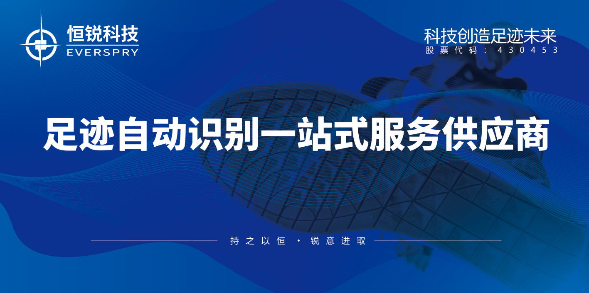

返回新闻列表
恒锐科技股份有限公司被认定为2022年辽宁省首批典型实质性产学研联盟
更新时间：2022-03-08日前，辽宁省科技厅公布了2022年度辽宁省首批“揭榜挂帅”科技项目榜单、首批典型实质性产学研联盟名单。在本次公布的产学研联盟名单中，大连恒锐科技股份有限公司等9家大连高新区企业当选“盟主”。作为大连市足迹识别工程技术创新中心及盟主单位，恒锐科技始终坚持科技与生产并重，在从事足迹识别的二十年中，积累了大量的足迹、产品技术数据，科研投资力度也在逐年加大，公司坚持与盟内高校及其他研究机构保持密切的技术交流，通过与科研高校建立契约关系形成利益共同体，为企业及区域的创新发展提供强有力的技术支持。
